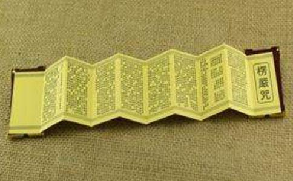

此咒具云“佛顶光明摩诃萨怛多般怛罗无上神咒”，简称“楞严咒”。共四百二十七句，二千六百二十字，分五会。
一、毗卢真法界会
密开十二：
（1）三宝三乘：初三句是皈依三宝。南无译皈命，萨怛他译一切，苏伽多耶，译如来，阿罗诃帝，译应供，三藐三菩陀，译正遍知觉，写，译尽。意谓皈命尽虚空，遍法界，一切如来应供正遍知觉，即皈依佛宝。佛陀译觉者，俱知译百亿，室尼钐译顶。意谓皈命一切诸佛无比最胜顶法，即皈依法宝。南无萨婆即皈命一切，勃陀即佛陀，勃地即菩提，萨哆即菩萨，译大道心众生，鞞弊，即毗尼，或毗耶，译善治、或最胜。谓菩萨发心勤求佛果菩提，于五乘中为最胜者，此即皈依大乘菩萨，亦即皈依僧宝。第四句是普礼一切圣众。南无萨多南，译大勇猛，或第一士，即上乘菩萨。三藐三菩陀，译正遍知，俱知南译百亿。即皈命百亿佛菩萨。第五句敬礼大辟支佛，娑舍啰译独来往，即独觉，婆迦译缘觉，僧伽译众，喃译上首。谓僻支佛是无学众中之上首。第六至第十句，是皈命敬礼四果圣人，一切小乘僧众。卢鸡译世间，谓阿罗汉是应受世间人天供养者，即四果圣人。苏卢多，译入，谓入圣人法流，波那译逆，谓逆凡夫六尘之流，即初果圣人。娑羯译一，唎陀译往，伽弥译来；谓一往天上，一来人间，即二果圣人。卢鸡译世间，三藐译正等，伽跢译不还；谓于欲界世间，证不还来，即三果圣人。伽婆啰，译到彼岸，底波译天，多那，译不来，即四果圣人；意谓依真如法牲，不来五那含天，还来无余涅槃岸，总括小乘一切贤圣僧。
（2）三界梵释：十一至十三句，敬礼诸天仙众。提婆译天，离瑟赧译色，悉陀耶，即兜率陀，译知足天。毗地耶，即四天王天。陀啰即化乐天，离瑟赧，谓兼色界广果天，舍波奴译他化自在天。揭啰诃，译众生，即总摄诸天眷属众。娑诃娑啰，译大千世界，摩他喃译人；谓统括三千界中，一切天仙人等，若圣若凡，莫不皈礼。十四至十五二句，是皈命大梵天众及帝释天王。跋啰诃摩尼，译离欲或净行，因陀啰那，即释提桓因，译能天主。因此等诸天，梵王帝释，皆菩萨示现，统领天众，教化世间；令诸众生，止恶行善。密迹经：佛记螺髻梵王，将来成佛，号清净光明如来。璎珞经：佛记帝释，当成正觉，名无著尊。既是现在菩萨，未来之佛，故应皈命敬礼。
（3）五大诸天：自南无婆伽婆帝第十六句，至二十三句，是自在天众，及诸天眷属，一切神祇。婆伽婆帝，亦名薄伽梵。佛地论云：具自在，炽盛，端严，名称，吉祥，尊贵等六义。大智度论谓，具有道德，巧别法，得名声，破三毒等四义。密部咒仪则译为圣尊。显佛为三世间大圣，十法界至尊。嚧陀啰耶，谓地天神；乌摩般帝，谓风天神；娑醯夜耶，谓火天神；那罗野，谓水天神；拏那，谓空天神。大悲空智经云：“地天毗卢佛现，风天成就佛现，火天弥陀佛现，水天阿佛现，空天宝生佛现。”槃遮摩诃三慕陀罗，译歌颂大会，为歌乐天神名。南无悉羯唎多耶，译皈命礼拜，谓诸天神，皆佛菩萨亲身，皆应皈命顶礼。
自廿四至卅一句，是敬礼大梵天众，暨天将天曹，天兵天男女等。摩诃迦啰耶，译大作者，即大梵天王，能作娑婆界主。或谓是大悲光佛所现。地唎般剌那，译无量光天，或谓燃灯佛所现。伽啰毗陀啰，译五兄弟天，即五种大功德光明云天，谓无忧佛所现。波拏迦啰耶，译极障碍，即色界天顶，摩醯首罗天众。阿地目帝，译善思惟，三十三天中，威德轮天，及色界天中善见天等，或谓降伏众魔王佛，及善意佛所现。尸摩舍那泥，译火顶，即尸弃大梵，宝火佛现。婆悉泥译胜军，是外道无想天等，为斗战胜佛所现。摩怛唎伽拏，译云童，即仞利天众，是摩耶菩萨示现。南无悉羯唎多耶，译顶礼，如是天众，或权或实，皆当皈命投礼。
（4）五部种族：自卅二至四一句是敬礼五部圣众。南无婆伽婆帝，译圣尊，贯下五部。多他伽跢译如来，即佛部，中央毗卢遮那佛为主。俱啰耶译种族众，即三十七圣，皆从毗卢遮那佛心中流出。般头摩俱罗耶，即莲花部；西方阿弥陀佛为主，观音大势至等菩萨为种族众。跋阇啰俱啰耶，谓金刚部；东方阿佛为主，金刚手波罗蜜菩萨等为种族众。摩尼俱啰耶，是宝部；南方宝生佛为主，虚空藏，宝波罗蜜等菩萨为种族众。伽阇俱啰耶，译作法、办事，是羯磨部；北方成就佛为主，地藏业波罗蜜等菩萨为种族众。帝唎茶，译威德；输罗西那，译破魔军；波啰，译自在；诃啰译师子，拏啰，译能持；阇耶，译最胜；皆五部种族中圣人名。哆他伽多耶，是总结佛现。
（5）六方诸佛：自四二至七一句，是皈命敬礼，六方诸佛。阿弥多婆耶，是西方极乐世界阿弥陀佛，译无量光寿，谓佛光、寿、相好、依正、净严、罗汉，及菩萨皆无量故。阿刍鞞耶，译不动，是东方欢喜国阿欢喜光佛。鞞沙阇耶，译药，俱卢译师，吠柱唎耶，译青色宝；般罗婆译光，罗阇耶译王。即东方净琉璃世界，药师琉璃光王佛。三补师，译普遍一切，毖多译光胜，即普光佛，一切胜佛。萨怜捺啰，即娑罗树，译坚固，剌阇译王，皆上方佛名，出自弥陀经。舍鸡野，译直林，或栴檀，母那曳，译离垢，即无垢佛，离垢佛，栴檀德佛等。剌怛那，译宝，鸡都译幢，啰阇译王，即宝幢王佛，或宝积佛、宝胜佛等。皆六方诸佛名。
（6）五部咒心：自七二至八六句，是皈命顶礼，最上三宝；一切三乘内上首种性，人天乘中，上首种性。帝瓢译光明遍照，即最上三宝。佛是毗卢遮那，法谓灌顶部，僧名金刚上师。萨羯唎多，意谓一心皈命往来亲觐，翳昙，译无比法，婆伽婆多即一乘佛法。意谓一乘法宝是圣者所尊敬。伽都即伽陀，译颂，十二部经之一，瑟尼钐译顶，意谓此法，亦即以下佛顶心咒，是藏部之顶首。萨怛多，译宝伞，般怛蓝，译华盖，是中方毗卢佛顶心咒，为一切密咒中之心。阿婆啰视耽，译无能胜，般啰帝，即波罗蜜多，杨岐啰译螺，意谓吹此大法螺，能伏诸魔怨，无有能胜者，普令众生，得到菩提彼岸。萨啰婆，译一切，部多，译大身，揭罗诃，译种性，意谓此是大乘种性。尼译领首，尼揭啰诃羯迦啰诃尼，意谓一切三乘内上首种性。跋啰，即般若，瑟地，即菩提果。意谓大乘僧宝常住，代佛行化，能令众生，起般若观智，而成佛果菩提。叱陀你，译赤色如意珠。即观音如意心咒名。阿迦啰，译无上悲心，即大悲心咒，属西方莲花部，密唎柱译坚固，百八金刚中之一名，即金刚心咒，属东方部。般唎译生，怛啰译宝，是宝生佛名，即妙宝心咒，属南方部。柠译最上，揭唎，译作法，或转轮。即大轮心咒，北方成就佛部。萨啰婆译一切，槃陀那，译结界，或道场法界。目叉尼译胜解脱。意谓以上诸心咒，及一切道场行法者，皆得解脱，一切生死苦缚。突悉吒，译别见，突悉乏，译烦恼，般那你译智慧，伐啰尼，译自在，此对染而成净，意谓即妄即真。如圆觉经云：“智慧愚痴，通为般若，菩萨外道，同是菩提。”赭都啰，译冤家，失帝南，译解脱，意谓此五部心咒之一切法会道扬，皆令行者，转染成净，即妄即真，降伏怨害，解脱烦恼生死，自此超凡入圣。如圆觉经云：“一切烦恼毕竟解脱，一切障碍，即究竟觉。”
（7）折摄天神：自八七至九八句，是皈命礼敬，八万四千护法金刚神众。羯啰诃，是天神种族，娑诃即娑婆译堪忍，萨啰证坚固，若阇译普集。谓此娑婆大千界内；诸天护法神众，皆来普集法会，引领善信，皈依三宝。毗多崩萨那羯唎，译作法，或破平障难。意谓一切天神等众，普能破怨，折伏魔眷，令皆钦伏。阿瑟吒冰，译无量色光，舍帝南译成就悉地妙首。那叉译钩镇，或紫焰色，刹怛啰译力士。谓金刚力士，放光解厄，以摄受众生。波啰译妙，或到彼岸，萨陀那，译大勇猛。谓金刚萨埵，发大勇猛，到此岸以折伏众生。阿瑟吒南，译金刚手拳，摩诃羯啰诃若阇，译大乘种性。谓以大乘金刚手而引进之，是摄受门；毗多崩萨那羯唎，谓金刚神，将以种种诃责，而降伏之，是折伏门。萨婆译一初，舍都卢译妙喜，你婆罗译首主，若啰，译引首。谓金刚上首菩萨，以摄折二门，引领众生，皈依三宝；治诸怨害病难，令生善喜。呼蓝，译敬受，或作法，突悉乏，译喜王。难遮那舍尼，译除生老病死，水神名，能除水毒。毖沙舍，译虚空，空神名，又译沙药，能除时气病。悉怛啰，译坚持，火神名，能治地大增损病，亦心咒名，咒药能除百病。阿吉尼，水神名，能除水毒病。乌陀迦啰，风神名，能除风瘫病。若阇译引首，总谓诸金刚神王，作诸法药，除灭众生一切毒病，令得乐果。
（8）圆通诸圣：自九九至一○七句是皈命顶礼，圆通章中诸圣。阿般啰视多，即阿逸多，译无能胜，具啰译圣众；即弥勒菩萨，大势至菩萨，香严童子等。般啰译光，战持译月，摩诃译大道心，即月光菩萨等。迭多译光，即乌刍瑟摩火头金刚。帝阇译虚空，即虚空藏菩萨。税多译白，阇婆罗，译观光自在，即白衣观音菩萨。跋谓跋陀婆罗菩萨，译善守或贤护。跋啰即普贤菩萨，槃陀即周梨槃特迦尊者，婆悉你，即波斯匿王，译胜军，仁王经：谓月光过去龙光王佛法中，为四地菩萨。诃唎耶译圣者，多罗译持地，即持地菩萨。毗唎俱知，即毗琉璃，前云：吠柱利耶，即琉璃光法王子。誓婆，译固活，医师名，前云鞞沙阇耶，译药，即药王、药上二菩萨。
（9）五部法将：自一○八至一一六句，是皈命金刚界护五部法之金刚神众。跋阇啰，金刚藏王都名，摩礼底，译不空事业，或极济群生，是护羯磨部神名。毗舍嚧多，是毗卢遮那佛金刚界主。勃腾即佛陀，罔迦即世尊，二皆护佛部神名。制喝那，译愍苦，阿遮译除禅定垢，却邪魔障，皆护金刚部神名。摩啰制婆，译建大法幢，满众生愿，或成就德相，断灭障习，是护灌顶部金刚神名。般啰质多，译无能胜，是护莲花部，金刚神名。擅持，译解脱，或无生；毗舍啰遮，译降伏法；扇多译见灾，舍鞞提婆译钩或召，即钩召法；补视多，译教化开，即增益法；苏麾嚧波，译敬爱法；此皆大法门名。
（10）三宫天众：自一一七至一一九句，是皈命日月星三宫天子。摩诃锐多，即白衣观音；阿唎耶，译圣者，多啰译宝，即日宫天子。经云：日名宝光，月名宝意，日光天子观音菩萨应世，月光天子，大势至菩萨应世。故阿唎耶多罗，意双通日月天子，又税多阿唎耶但约观音，多啰但约大势至，婆啰译光明，即星宫天子，虚空藏菩萨应世。阿般啰，译无量光，是通于五星，九曜，二十八宿，八万四千诸星眷属等，三宫天子之上，皆冠以摩诃，显皆大菩萨示现也。
（11）五坛界神：自一二○至一三四句是皈命五佛坛前，护法金刚神众。跋阇啰，即金刚五界，商羯啰，译善意，俱摩唎，译金光童子，俱蓝陀利，译庄严法门，天母名。喝萨多遮，译离系，毗地耶译善语，干遮那，译精进，摩唎迦，译力士，啒苏母，译月神，皆弥陀佛坛前，金刚神众。察羯罗哆耶，译除曲心，是成就佛坛前金刚神。鞞卢遮那，译众光或勇军，是显密遮那佛所现。俱唎耶，译最上，夜啰菟，译无量光净。瑟尼钐，译肉髻顶，皆毗卢佛坛前金刚神众。毗折蓝婆，译离缚，摩尼遮，译威伏行，是宝生佛坛前金刚神众。迦那，译无言说，或妙智教。迦波啰婆，译妙转，卢阇那，译光明遍照。此皆守中方界神名。顿稚遮译牙，税多遮译白，迦摩啰译莲花座，皆守护西方界神名。刹奢尸译柱，波啰婆译力，皆守护南方界神名。翳帝译解脱，夷帝译精勤，皆守护东方界神。母陀啰，译印，或妙音成就，羯拏，译作法，是守护北方界神。此皆金刚上师，毗卢佛心中流出，三十七圣，百亿神王。亦金刚藏菩萨所化现，八万四千徒众眷属，拥护佛法者。
（12）诸佛印成：自一三五至一三七句是诸佛印成。娑鞞啰，意谓身礼，口请，心求。忏谓忏悔，掘梵都即薄伽梵，佛世尊。印兔那译印可，或明证。么么译我，或我所作，写译尽，或竟。意谓三业忏悔，求佛印证，凡修此楞严坛法，如仪持咒者，皆能现证藏心，得入圆通，乃至圆满菩提，归无所得。
二、释尊应化会
密开为八：
（1）应作五部：自乌【合牛】一三八至一四一句，是释尊应身，化作五部神众。观音咒经谓，乌【合牛】，当唵字。如意经谓，乌唵，作唵，虎【合牛】，作吽。唵，是毗卢佛字种；吽，是阿佛字种。般若理趣释云：“唵字三身义，无见顶相义，本不生义，如来毫相功德义。”文殊品云：“唵者，觉悟义。”而诸咒部云：“唵，是引生义。”谓三身如来，五智佛母，能引生一切功德法门。今取如来三身，应作五部。五部即佛部：以毗卢佛为主；金刚部：以阿佛为主；宝部：以宝生佛为主；莲花部，以弥陀佛为主；羯磨部：以成就佛为主。唎瑟，译智光安住，揭拏译虚空藏，是宝部法。般剌，即般若，六度中智度，是莲花法部。舍悉多，即苏悉帝，译成就，谓善能成就一切愿心，善能完满一切事理法益，此羯磨成就法部。萨但他，译诸佛，伽都瑟尼钐，译无见顶相，此即佛顶首楞严咒，是佛部法。
（2）现证三宝：自一四二至一五○句，若约三身释，虎【合牛】都嚧雍五字总合为一唵字，唵字含三义，谓婀、乌、莽，即法报化三身如来。一切佛法无不皆从此流出。若约五佛释，虎即乌哑，是弥陀字种；【合牛】，即吽字，是阿佛字种；都是成就佛字种；嚧，是宝生佛宇种；雍是毗卢佛字种。今以虎等五字，冠于句首，意谓三部，五部，诸咒法，皆由此引领。三宝圣贤，无不由是出生。瞻婆译金色，那译无上。意谓法身周遍，毗卢遮那佛，即佛宝。悉耽婆那，译成就吉祥，意谓悉怛多，般怛啰，秘密章句，能成就无上吉祥，是法宝。波啰，译度无极，或到彼岸，瑟地耶，译成就，三般叉译解脱。意谓三明六通，三漏四流，无不证断，无漏妙行，已圆满成就，即僧宝。
（3）化二神王：自一五一至一五五句谓应化药叉罗刹二王。萨婆译一切，药叉译勇健鬼。喝即摩诃译大，罗刹娑译速疾鬼。揭啰诃，谓在地行，空行，天行等夜叉，罗刹众眷属。若阇，谓夜叉罗刹之父母子孙、兄弟军将，大臣杂役等，差别无量。毗腾崩萨那羯啰，谓此二种神王，普能破怨除难，度去一切苦厄。
（4）迹示金刚将：自一五六至一六○谓应化金刚神将，者都啰，译智慧多，又名势帝惹睹，译利剑，即金刚王宝剑。尸底喃译箭，谓执坚固箭直入三摩地。又名尸师喃，译妙吉祥，二皆金刚王名。揭啰诃，谓眷属众。娑诃萨啰南，谓尽此大千界之金刚神众。毗腾崩萨那罗，谓屏除魔障，施以安宁。
（5）护佛顶法：自一六一至一六五句，谓金刚神王，天仙等众，皆仗佛威德神力，各以折摄二行，拥护佛顶神咒。罗叉约摄受门，译守护，约折伏，译可畏。婆伽梵，萨怛他伽都瑟尼钐，谓诸佛一切大佛顶法，亿万金刚，皆以折摄二行守护之。
（6）力持三宝：自一六六至一七一句。波啰点，即般剌密谛，译光音自在。阇吉唎，译作礼，摩诃译大千，娑诃萨罗译能忍，娑婆世界之总称。勃树，即阿输，译无忧，室唎沙，译妙首，俱知译钩，娑诃萨泥，同娑诃萨罗啰译忍。帝隶译威德，阿弊提视，译无能胜，婆唎多，译善赞，此皆金刚神名。吒吒，是字母译离障，罂迦，译众法无碍。意谓显密三藏，三五教乘，凡法身舍利，法光遍照之处，一切持戒金刚神等，无不顶力护持，普令障碍，摧碎无余。
（7）加护坛场：自一七二至一七四句，摩诃跋阇嚧陀啰译，译大金刚，能守护持。帝唎同上，译威德，或无能胜。菩婆那，即佛陀，译觉者。曼茶啰，译满，或印证。意谓诸大护法，金刚神王，皆能守护，现证三昧之坛，神咒吉祥之界；令诸修行人，得入佛心咒，现证佛顶首楞严王大定。又诸佛得菩提道之场，及般若理趣之会，非大金刚王，顶力加护不可。故释尊应化，诸大力金刚神王，以加护咒坛道场也。
（8）印令成就：自一七五至一七八句。乌【合牛】同前，觉悟或出生义。娑悉帝，即苏悉提，谓一切悉地法，妙能成就，薄婆都译圆满，即婆伽婆帝，亦即佛世尊。么么是字母译我所作法。印兔那，译喜，即教示利喜，或印我诵持。意谓诸大金刚神王，仰仗佛世尊威力，率诸眷属，拥护行者，令所作法，悉皆随愿圆满，得以究竟成就。